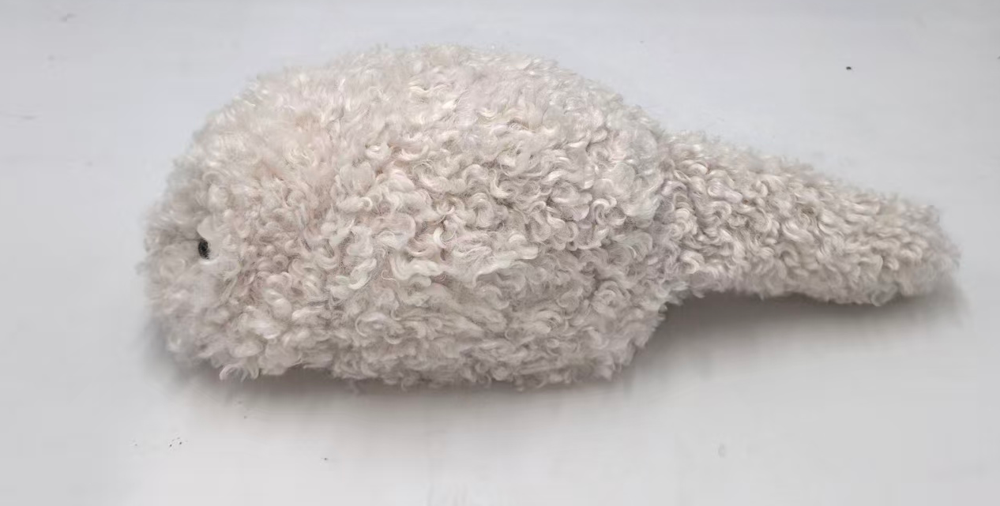

DOMI prototypeDOMI: embodied support for stress regulation
A soft breathing companion paired with VR. I’m investigating how an individualized EEG-derived recovery state can guide the level of visual, auditory, and haptic support.
My work: EEG pilot, state-to-support mapping, prototype integration, and study design.
Research details
A 13-participant pilot with 32-channel EEG informed the choice of frontal alpha as a candidate recovery-related signal. The prototype coordinates breathing cues in VR with the companion’s abdominal motion.
The planned study compares EEG-contingent support with matched non-contingent support. The adaptive system’s effects on recovery and experience remain to be evaluated.